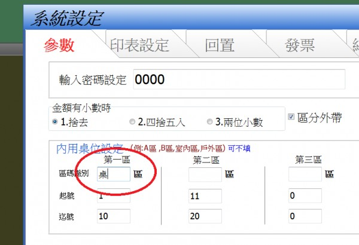

回覆 及 建議 ^.^
Q2:V2.7.6已經可以出現電話取餐字眼，不過是出現在列印單最上方，字很小太不明顯，可以把列印單的<<外帶>>字串拿掉，改成<<電話取餐>> 或 <<電話>>。
Q3:內用還是不會出現桌號的"桌"字，只會出現<7>，希望是看到<7桌>在內用區 和 第二銀幕區。
Q4:同單 同套餐 可以合併，同套餐同單點2份但各份的飲料不同或冷熱不同時，卻無法合併，此時無法讓工作人員同時快速下食材，會造成-->看完出單第一列之後，還要繼續往下面數列餐點默背統計，然後才能統一下食材，這樣並不便利，可以再修改成只要同單同套餐點兩份以上，不管其飲料 或 冷熱是否一樣，統統合併成一列。 ^.^
3 個回答
Q1 已修改外帶識別 請至首頁下載更新
Q2 已修改列印外帶識別 請至首頁下載更新
(小改版 所以版號依然是2.76)
Q3 您可設定區域識別 如下

Q4 列印排序問題 因有點餐 加點的出餐順序問題 怕影響現有客戶看單習慣
暫時不改
請參考 謝謝您的建議
1.電話和外帶的列印單都會重複出現"單號: " 2次，敬請驗證。^.^
您好